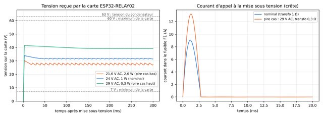

-
 Interface
InterfaceInterface interactive (3D)
Passage de Spot, câblage animé, boîtier en 3D, programmation, alimentation, achats, diaporama.
-

ImageCourbes de la simulation du redresseur
Tension sur la carte et courant d'appel, cas nominal et pire cas.
-
CIR
ngspice
Netlist ngspice
À ouvrir avec ngspice (Windows : ngspice-47). Tension moyenne, pointe et énergie d'appel.
-
JSON
JSON
Résultats des six cas
Tension moyenne, mini, maxi, courant et énergie d'appel par cas.
-
JSON
JSON
Balayage du transformateur
Pointe de tension et énergie d'appel selon l'inductance et la résistance du transfo.
-
PY
Python
Script de simulation
Lance les six cas avec ngspice et produit les courbes.